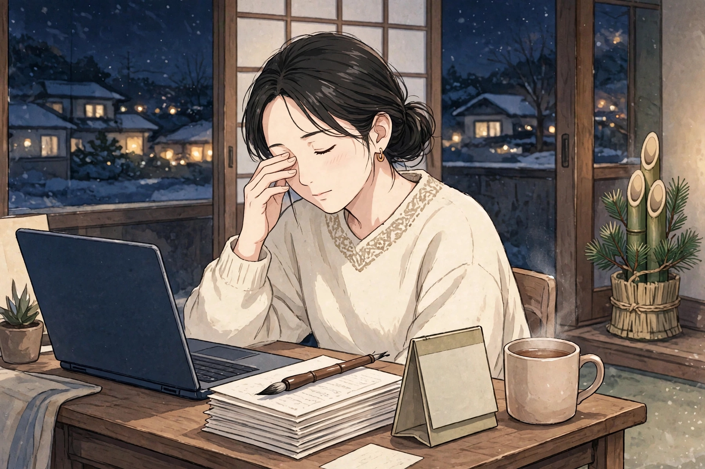
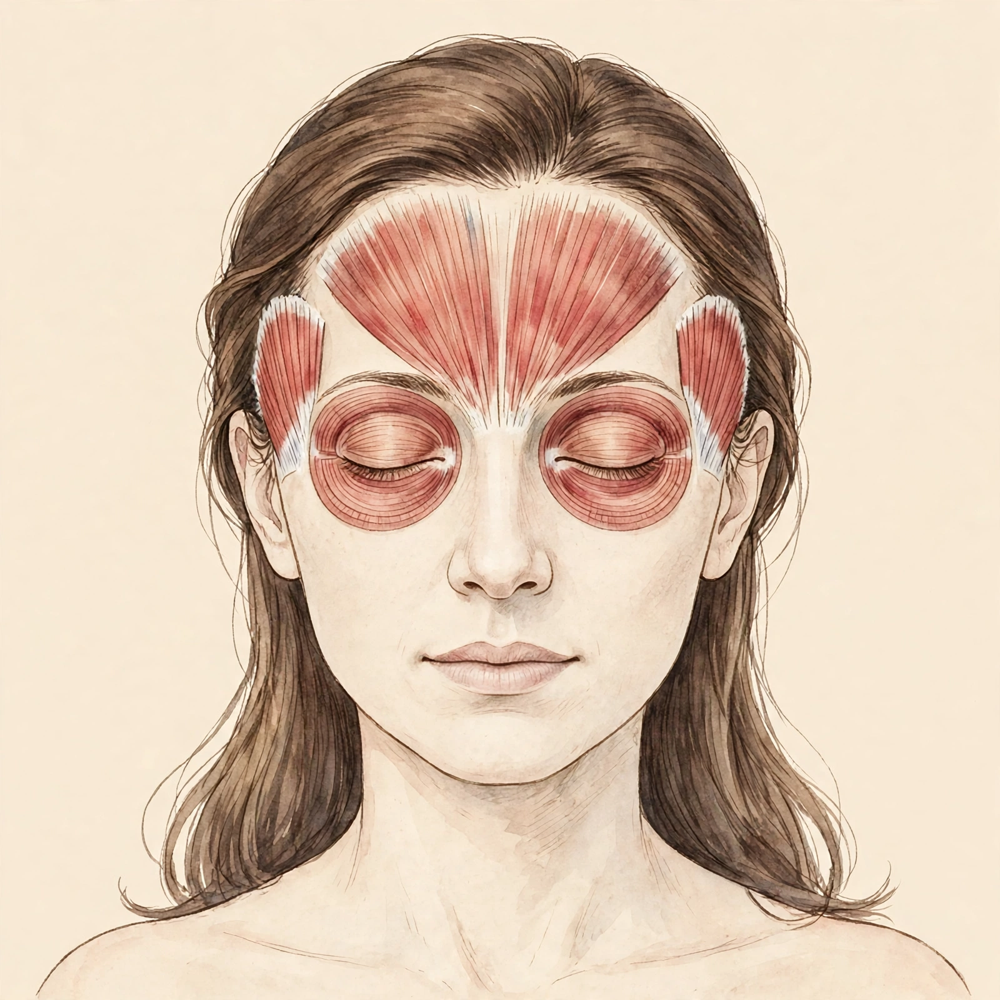

難波で年末の忙しさに気になる目の疲れ感｜要因の整理とセルフケア、受診の目安

１．年末の忙しさに気になる目の疲れ感とは ― 用事が重なる時期に意識しやすい場面
「仕事納めに向けて画面と向き合う時間が長くなり、夕方には目が重く感じる」「年賀状の宛名書きや年賀メールの準備で細かい文字を見続けたら、目がしょぼしょぼする」「買い物リストや帰省の手配をスマートフォンで調べているうちに、目の奥が重くなった」——年末の忙しい時期に感じる目の疲れ感は、12月ならではの場面で意識されやすいお悩みの一つです。ここでいう目の疲れ感は、目の重さや乾き、かすみ、しょぼしょぼする感じなどをまとめて表す日常的な言い方で、医学的な診断名ではありません。仕事帰りに感じる目の疲れについては関連コラム「難波で仕事帰りに気になる眼精疲労」、休みの日の画面時間との関係については「難波で週末に気になる目の疲れ感」でも整理していますが、この記事では「年末の忙しい時期」という場面に絞って整理します。年末は、仕事の追い込みと家の用事が同じ時期に重なり、目を使う時間そのものが長くなりやすい時期です。感じ方や程度は人によってさまざまで、感じ方だけで、その背景を特定することはできません。この記事では、年末の忙しさに気になる目の疲れ感の一般的な解説、考えられる要因の例、忙しい時期でも取り入れやすいセルフケア、そして先に医療機関へ相談したい目安を整理します。あくまで一般的な情報としてお読みください。
２．考えられる要因の整理
年末の時期に目の疲れ感を意識しやすくなる背景には、次のような過ごし方や環境が関係している場合があります。
- 仕事納めに向けた画面作業の集中：年末は締め切りの前倒しや引き継ぎの準備などで、パソコンや書類と向き合う時間が長くなりやすい時期です。集中して見続ける時間が延びることが、その日の夕方以降の感じ方と重なる場合があります。
- 年賀の準備や調べ物での細かい文字：年賀状の宛名や文面の確認、年賀メールやメッセージの作成、帰省や買い物の調べ物など、細かい文字や小さな画面を見る場面が増えます。近くのものを見続ける姿勢が続くことも、感じ方と重なる場合があります。
- まばたきの回数の減少：画面や文字に集中していると、まばたきの回数が減りやすいと言われます。目の表面のうるおいが保ちにくくなることが、乾きやしょぼしょぼする感じと一緒に語られることがあります。
- 暖房による室内の乾燥：12月は暖房を使う時間が長くなり、室内の空気が乾燥しやすい時期です。職場でも自宅でも乾いた空気の中で過ごす時間が延びることが、目の乾きの感じ方と重なる場合があります。
- 夜の予定の重なりと眠りの後回し：忘年会などの夜の予定や、帰省・来客の支度が重なると、帰宅が遅くなったり、寝る前の時間に用事を片付けたりしがちです。眠りの時間が短くなることが、翌日の目の重さと一緒に語られることがあります。
- 日が短い時期の照明と画面の明るさ：冬は暗くなるのが早く、照明や画面の光を目にする時間が長くなります。部屋の明るさと画面の明るさの差が大きい環境で見続けることも、感じ方と重なる場合があります。
これらは一例であり、当てはまるものがあっても、それがご自身の目の疲れ感の背景であると決めつけることはできません。
３．忙しい時期のセルフケア
どれも特別な道具はいりません。年末の用事の合間に取り入れやすいものから試してみてください。目まわりと額・こめかみの筋肉の指標（図1）と、首・肩まわりの指標（図2）も参考にしてください。なお、起き抜けから目の疲れ感が気になる日の過ごし方については、関連コラム「難波で朝に気になる目の疲れ感」でも整理しています。
- 見る作業を区切って目を休ませる：年賀状の宛名書きや画面作業は、時間を目安に一度手を止め、遠くを見る、目を閉じるなどの小休止を挟む方もいます。用事を数日に分けるのも一つの方法です。
- まばたきを意識して増やす：集中している合間に、ゆっくりとまばたきを何度か繰り返すことを取り入れる方もいます。目薬の使用については、製品の注意書きを確認し、気になる場合は薬剤師や眼科へ相談してください。
- 蒸しタオルで目まわりを温める：水で濡らして絞ったタオルを温め、閉じた目の上に数分のせる過ごし方を取り入れる方もいます。熱すぎない温度を確認してから行ってください。
- 室内の乾燥をやわらげる工夫：加湿器を使う、洗濯物を室内に干す、暖房の風が直接顔に当たらない位置で過ごすなど、過ごす場所の乾燥を意識する方もいます。
- 画面の位置と明るさを整える：画面までの距離を少し離す、画面の明るさを部屋の明るさに近づける、スマートフォンは顔の高さに近づけて下を向きすぎないなど、見る姿勢を見直す方もいます。
- 寝る前の画面時間を区切る：年末の用事は寝る直前まで持ち込まず、就寝の少し前には画面を閉じて眠る準備に入る過ごし方を取り入れる方もいます。
- 目まわりと首・肩を小さく動かす：目を閉じたままゆっくり目まわりを意識する、肩をすくめてストンと下ろす、首をゆっくり左右に傾けるなど、小さな動きを合間に取り入れる方もいます。痛みが強まる動きは避けてください。


４．受診の目安
次のような場合は、セルフケアやサロンでのケアより先に、眼科など医療機関への相談をご検討ください。
- 見え方が急に変わった、視野の一部が欠けて見える、物が二重に見える
- 目の痛みが強い、強い充血や目やにが続いている
- 片方の目だけに症状が強く出ている
- 頭痛や吐き気を伴う、光がまぶしくてつらい状態が続く
- 十分に休んでも目の疲れ感が数週間続いている、または繰り返している
- 目をぶつけた、異物が入ったなど、きっかけになる出来事の後に症状が出た
これらは一例です。目の疲れ感の背景には、視力や目の状態、体の不調やお薬の影響などが関係する場合もあります。当てはまる場合や、少しでも気になる症状がある場合は、自己判断せず医療機関にご相談ください。持病のある方や服用中のお薬がある方は、かかりつけの医師や薬剤師への相談もあわせてご検討ください。
５．当店でのケアとサロンのご案内
ステラシリウス（難波）は、月〜土 17:00〜22:00／日曜 12:00〜22:00に営業する女性専用サロンです。カウンセリングで当日のお悩みをうかがい、首・肩まわりや背中を含めた全身の体の状態を見ながら、オイルマッサージと美容整体を組み合わせた90分 10,000円（税込）のコースをご用意しています。完全個室で、シャワー完備のため、施術の前後に汗やオイルを流してからお帰りいただけます。年末の用事が一段落した時期に、体をほぐしてゆったり過ごす休息の時間としてご利用ください。なお、ご予約はLINE公式から受け付けています。また、当サロンはリラクゼーションを目的としたサロンで、医療行為は行いません。目の疲れ感に関する治療を行うものではありませんので、「受診の目安」に当てはまる場合は、まず医療機関へご相談ください。